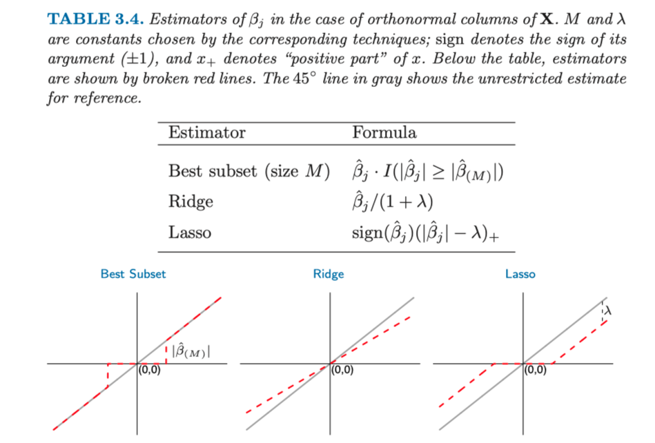
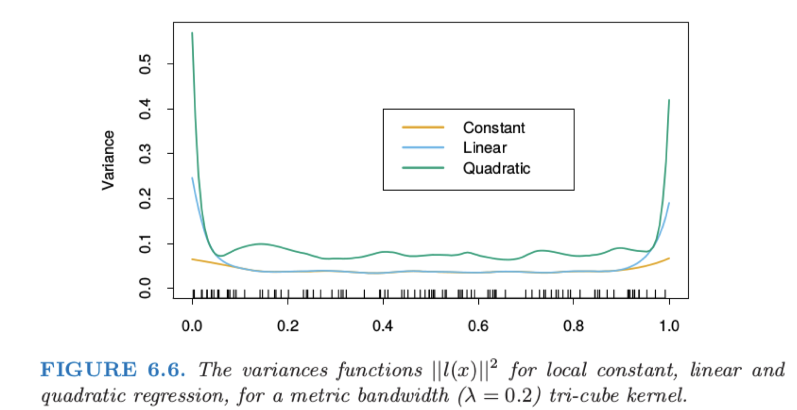

Syllabus¶
- Overview
- Linear methods for regression
- Linear methods for classification
- Basis expansions and regularization
- Model assessment and selection
- Model inference and averaging
- Tree based methods
- Boosting
- Random forest
- Support vector machine
- Propotype methods and nearest-neighbors
- unsupervised learning
Introduction¶
- 监督学习: 不同的任务形式, 回归、分类、排序
- 无监督: 聚类
- 几个例子: Email spam, Prostate cancer(regression), Handwritten digit recognition, DNA expression microarrays(无监督, Cluster together genes or samples)
监督学习概要¶
- 变量类型和术语
- 两种简单的预测方法
- 线性 Least Square
- KNN
- 注意, 两种都可以处理分类和回归任务, 而 kNN 的有效参数量为 N/k, 一般比线性模型更多; 因此 kNN 相较于最小二乘有着 低偏差, 高方差 的特点
- 拓展 LS 和 kNN: 1. Kernel 方法; 2. 局部回归; 3. Basis expansion 通过基拓展使得包括更多的输入形式
- 统计判别理论 Statistical Decision Theory
- 针对回归和分类场景, 比较了不同的 loss
- 根据 Expected prediction error E P E(f)=E(Y-f(x))^{2}=\int(y-f(x))^{2} \operatorname{Pr}(d x, d y), 推导出
- [回归] 在平方损失下最优解为 f(x)=E(Y \mid X=x)
- [分类] 在 0-1 损失下为 后验概率最大的类别
- 因此给出了最小二乘和 kNN 的结果
- 高纬问题的局部方法 Curse of Dimensionality
- 总之, 就是维度的增加造成了数据稀疏
- 统计模型、监督学习和函数逼近
- 用函数估计的思想介绍了 统计模型
- [回归] additive error model, kNN
- [分类] 直接建模后验概率, logistic regression, probit regression
- 函数/参数估计的方法
- 线性模型最小二乘
- 更一般的是 MLE
- 两个例子: 1. 高斯分布下, MLE 等价于 LS; 2. Multinomial distribution 下, 类别的估计符合直觉.
- 用函数估计的思想介绍了 统计模型
- Restricted Estimators, 介绍了三类
- Roughness Penalty and Bayesian Methods
- P R S S(f ; \lambda)=R S S(f)+\lambda J(f)
- 例如 P R S S(f ; \lambda)=\sum_{i=1}^{N}\left(y_{i}-f\left(x_{i}\right)\right)^{2}+\lambda \int\left[f(x)^{\prime \prime}\right]^{2} 的解就是三次光滑样条
- 贝叶斯视角: 可以将惩罚项看成是 prior belief (log), 最小化 PRSS 就是最大化 后验概率
- Kernel Methods and Local Regression
- R S S\left(f_{\theta}, x_{0}\right)=\sum_{i=1}^{N} K_{\lambda}\left(x_{0}, x_{i}\right)\left(y_{i}-f_{\theta}\left(x_{i}\right)\right)^{2}
- 这里待估计的函数形式若为常数, 则为经典的 Nadaraya-Watson estimate (带上权重的 kNN; kNN 可以理解为一种特殊的 Kernel); 若为线性函数, 则为局部线性回归.
- Basis Functions and Dictionary Methods
- (1) 线性基 expansion f_{\theta}(x)=\sum_{m=1}^{M}\left(\theta_{m} h_{m}(x)\right)
- 见
5.2 节 - 径向基函数 Radial basis functions, 见
6.7 节
- 见
- (2) 神经网络: 单层的向前反馈的带有线性输出权重的神经网络模型可以认为是一种自适应的基函数方法, f_{\theta}(x)=\sum_{i=1}^{M} \beta_{m} \sigma\left(\alpha_{m}^{\top} x+b_{m}\right)
- 这些自适应选择基函数的方法也被称作 字典 (dictionary) 方法; 在 infinite set 的字典中按照一定的策略搜索
- (1) 线性基 expansion f_{\theta}(x)=\sum_{m=1}^{M}\left(\theta_{m} h_{m}(x)\right)
- Roughness Penalty and Bayesian Methods
- Bias Variance Tradeoff
- 模型复杂度: 上面的三种限制策略, 惩罚项系数、Kernel 宽度、基函数数量 都控制了模型复杂度 (smooth/参数数量)
- EPE (expected prediction error) 的分解 EPE(x_0) =E\left[y_{0}-f\left(x_{0}\right)\right]^{2}+E\left[f\left(x_{0}\right)-E\left(\hat{f}\left(x_{0}\right)\right) \right]^{2}+E\left[\hat{f}\left(x_{0}\right)-E\left(\hat{f}\left(x_{0}\right)\right)\right]^{2}.
- 第一项为 irreducible error 不可约减; 后面两项构成 均方误差 (mean squared error), 分别为 Bias squared 和 Variance
- 见
第 7 章
回归的线性模型¶
- Intro
- 线性模型的优势: 1. 模型简单, 可解释; 2. 在 训练集数量较小、信噪比较低、稀疏数据 等情况下表现较好; 3. 通过拓展可以适用于非线性情况
- Linear Regression \& Least Squares
- 通过 LS 估计, 则在 X 列满秩的条件下有参数估计 \hat{\beta}=\left(X^{\top} X\right)^{-1} X^{\top} y; 另有随机项方差估计 \hat{\sigma}^{2}=\frac{1}{N-p-1} \sum_{i=1}^{N}\left(y_{i}-\hat{y}_{i}\right)^{2}
- 重点要关注的是参数估计的 方差
- 加上正态性假设, 则有 \hat{\beta} \sim \mathcal{N}\left(\beta,\left(X^{\top} X\right)^{-1} \sigma^{2}\right), 以及 (N-p-1) \hat{\sigma}^{2} \sim \sigma^{2} \chi_{N-p-1}^{2}
- 可得 Hypothesis Testing
- 单变量: 1. 在噪声方差已知时, z_{j}=\frac{\hat{\beta}_{j}}{\sigma \sqrt{v_{j}}} \sim \mathcal{N}(0,1); 2. 未知, 则用估计值替换, z_{j}=\frac{\hat{\beta}_{j}}{\hat{\sigma} \sqrt{v_{j}}} \sim t(N-p-1).
- 检验多变量, 记大模型和小模型分别有 p_1+1, p_0+1 个参数, 分别计算 RSS,
- 定义统计量 F=\frac{\left(R S S_{0}-R S S_{1}\right) /\left(P_{1}-P_{0}\right)}{R S S_{1} /\left(N-P_{1}-1\right)}; 衡量了 大模型中每个增加的系数对于 RSS 的改变, 并且用方差的估计值进行标准化
- 在零假设下, H_{0}, F \sim \mathcal{F}_{p_{1}-p_{0}, N-p_{1}-1}
- Confidence Interval / Region
- 单变量: 1-2 \alpha 置信区间为 \left(\hat{\beta}_{j}-z^{1-\alpha} v_{j}^{1 / 2} \hat{\sigma}, \hat{\beta}_{j}+z^{1-\alpha} v_{j}^{1 / 2} \hat{\sigma}\right), 其中的 z^{1-\alpha} 为正态分布或 t 分布的 {1-\alpha} 分位数
- 全变量: \beta: 1-2 \alpha confidence region 为 \mathcal{C}_{\beta}=\left\{\beta \mid(\hat{\beta}-\beta)^{\top} X^{\top} X(\hat{\beta}-\beta) \leqslant \hat{\sigma}^{2} {\chi_{p+1}^{2}}^{1-2 \alpha}\right\}
- Gauss Markov Theorem: 在参数 \beta 的所有无偏估计中, 最小二乘估计是其中方差最小的.
- 证明
- 拓展两点
- Multiple Linear Regression: 多元线性回归和一元的关系: 当所有自变量都是正交的情况下, 得到的系数都是一样的. 而对于不正交的情况, 可以采用 Gram-Schmidt 正交化, 当然在两个变量相关性较高的情况下, 估计会不稳定.
- Multiple Outputs: 1. 当不同的 Y_i 误差项独立时, 可以分解为一元输出的形式; 2. 相关时 (假定所有观测的误差协方差矩阵 \Sigma_{i} 相同), 需要定义 R S S(B, \Sigma)=\sum_{i=1}^{N}\left(y_{i}-f\left(x_{i}\right)\right)^{\top} \Sigma^{-1}\left(y_{i}-f\left(x_{i}\right)\right) 注意这里用了误差的协方差矩阵进行设置不同估计误差之间的系数, 叫做 「多重变量加权准则」, 可由「多变量高斯定理」推出.
子集选择¶
- Subset Selection
- 不采用基本的 LS 的两点理由: 预测精确性, 模型的可解释性
- 有理想的情况, 自然是从所有可能的子集中选择最优的, 但是计算量过大.
- 相较于采用 F 统计量来选择「显著性」项然后删除非显著项, 它的问题在于没有考虑「多重检验」问题, 因此 Forward/Backward-stepwise selection 更好.
收缩方法 Shrinkage methods¶
- Subset 方法:
- 优点: 1. 可解释; 2. 可能相较于全模型有更小的预测误差
- 缺点: 1. Discrete, 变量有或无; 2. 高方差
- Ridge Regression 岭回归
- \hat{\beta}^{\text {ridge }}=\operatorname{argmin}_{\beta}\left\{\sum_{i=1}^{N}\left(y_{i}-\beta_{0}-\sum_{j=1}^{p} x_{i j} \beta_{j}\right)^{2}+\lambda \sum_{j=1}^{p} \beta_{j}^{2}\right\}, 可利用 Lagrange 乘子法 证明惩罚项可等价于, 增加硬性约束 \sum_{j=1}^{p} \beta_{j}^{2} \leqslant t
- 注意, 对于岭回归, 对输入按照比例进行缩放, 得到的结果是不同的, 因此在上面的求解前需要见进行标准化.
- 解: \hat{\beta}^{\text {ridge }}=\left(X^{\top} X+\lambda I\right)^{-1} X^{\top} y
- 性质:
- 注意到通过增加了一个单位阵, 保证了矩阵 nonsingular
- 在正交输入的情形下，岭回归估计仅仅是最小二乘估计的 收缩 版本, 即 \hat{\beta}^{\text {ridge}}=\frac{1}{1+\lambda}\hat{\beta}^{O L S}
- 可以证明岭回归等价于 参数在高斯先验下的后验估计, 且满足关系 \lambda = \sigma^2 / \tau^2, 其中 \sigma^2 为噪声项方差, \tau^2 为 prior 高斯方差.
- 利用 SVD 分解, 可以得到 X \hat{\beta}^{\text {ridge }}=\sum_{j=1}^{p} \mu_{j} \frac{d_{j}^{2}}{d_{j}^{2}+\lambda} \mu_{j}^{\top} y, 其中 X=U D V^{\top}
- 从中可以看出岭回归「收缩」的本质: 对于方差越小的主成分, ridge 的收缩越厉害
- 定义 \mathrm{df}(\lambda) =\operatorname{tr}\left[\mathbf{X}\left(\mathbf{X}^{\mathbf{T}} \mathbf{X}+\lambda \mathbf{I}\right)^{-1} \mathbf{X}^{T}\right] =\operatorname{tr}\left(\mathbf{H}_{\lambda}\right) =\sum_{j=1}^{p} \frac{d_{j}^{2}}{d_{j}^{2}+\lambda} 为岭回归的有效自由度, 其为 \lambda 的递减函数.
- LASSO
- 换成 L_{1} penalty. 此时, 没有显式解, 不再如 LS 和 Ridge 时一样, 参数估计为 Y 的线性函数.
- 同样可写成硬性约束的形式, 注意到当 t>\sum_{j=1}^{p}\left|\beta_{j}^{\text {OLS }}\right| 时 \hat{\beta}^{\text {lasso }} becomes \hat{\beta}^{\text {OLS }}
- 比较: 在 X 正交的情况, 三者都有显式解.
- 
- 最优子集是「hard-thresholding」, Drop all variables with coefficients smaller than the M-th
- Ridge 是 roportional shrinkage
- Lasso 是「soft thresholding」, translates by a constant factor \lambda, truncating at zero.
Methods Using Derived Input Directions #TODO
Some Algebra¶
SVD¶
- 方阵的对角化分解/特征分解: A=U\Lambda U^{-1}, 其中 U 的每一列是特征向量
- 实对称阵的特征值都是实数, 且有 N 个线性无关的特征向量, 并且这些特征向量可以正交单位化为一组正交单位向量, 因此可分解为 A=Q\Lambda Q^{-1}= Q\Lambda Q 其中 Q 为正交阵 (矩阵 A 的 对称对角化分解)
- SVD 奇异值分解 A=P\Sigma Q
- 这里的 P 和 Q 分别是左奇异向量, 分别是 AA^T=P\Lambda_1 P^T, A^TA=Q\Lambda_2 Q^T, 这里两个特征值对角阵中, 非零特征值相同 (注意到 AB 和 BA 的特征值相同)
- 奇异值和特征值关系: AA^T=P\Sigma^2 P^T, 因此有 \Sigma^2=\Lambda_1, 也即奇异值是 AA^T 的特征值的平方根 (注意 AA^T 一定正定)
- 定理: 给定一个实数矩阵, 总能找到其 SVD 分解, 满足 \Sigma 为对角阵并且对角线元素非负.
TODO¶
PCA¶
- PCA (Principle Component Analysis)
- 首先对给定数据进行 规范化，使得数据每一变量的平均值为 0，方差为 1
- 对数据进行正交变换。原来由线性相关变量表示的数据，通过正交变换变成由若干个线性无关的新变量表示的数据。新变量是可能的正交变换中变量的方差的和(信息保存)最大的，方差表示在新变量上的信息的大小。
- [理解] 对原坐标系中的数据进行主成分分析等价于进行坐标系旋转变换，将数据投影到新坐标系的坐标轴上；新坐标系的第一坐标轴、第二坐标轴等分别表示第一主成分、第二主成分等。数据在每一轴上的坐标值的平方表示相应变量的方差；并且，这个坐标系是在所有可能的新的坐标系中，坐标轴上的方差的和最大的
- Population PCA
- 问题定义: 假设 x=\left(x_{1}, x_{2}, \ldots, x_{m}\right)^{\top} 为 \mathrm{m}-dim 随机变量, 均值和方差为 \mu, \Sigma; 考虑从 x 到 y 的线性变换, y_{i}=\alpha_{i}^{\top} x=\alpha_{1 i} x_{1}+\alpha_{2 i} x_{2}+\ldots+\alpha_{m i} x_{m}
- 可知: 1. E\left(y_{i}\right)=\alpha_{i}^{\top} \mu; 2. \operatorname{var}\left(y_{i}\right)=\alpha_{i}^{\top} \Sigma \alpha_{i}; 3. \operatorname{cov}\left(y_{i}, y_{j}\right)=\alpha_{i}^{\top} \Sigma \alpha_{j}
- 为了保证一定的性质, 进一步要求 1. \alpha_{i}^{\top} \alpha_{i}=1; 2. \operatorname{cov}\left(y_{i}, y_{j}\right)=0 for i \neq j; 3. y_{1} 有最大的方差, y_{i} 在满足与之前的 PC 独立的条件下有最大的方差.
- 定理: 对于随机向量 x 来说, 其第 k 个 PC 正是由其协方差矩阵的第 k 个奇异向量 (对称半正定阵的特征和奇异值分解应该是一样的), 并且这个 PC 的方差正是第 k 个奇异值(特征值).
- 若特征值有重根，对应的特征向量组成 m 维空间 \mathcal{R}^m 的一个子空间，子空间的维数等于重根数，在子空间任取一个正交坐标系，这个坐标系的单位向量就可作为特征向量。这是坐标系取法不唯一。
- PCA 性质:
- \operatorname{cov}(y)=\Lambda=\operatorname{diag}\left(\lambda_{1}, \lambda_{2}, \ldots, \lambda_{m}\right) 各个 PC 的方差就是协方差阵的各个奇异值/特征值
- \sum_{i=1}^{m} \lambda_{i}=\sum_{i=1}^{m} \sigma_{i i}, where \sigma_{i i} is the variance of x_{i} 总体主成分 y 的方差之和等于随机变量 x 的方差之和
- \sum_{i=1}^{m} \operatorname{var}\left(x_{i}\right) = \operatorname{tr}\left(\Sigma^{\top}\right)=\operatorname{tr}\left(A \Lambda A^{\top}\right)=\operatorname{tr}\left(A^{\top} \Lambda A\right) =\operatorname{tr}(\Lambda)=\sum_{i=1}^{m} \lambda_{i}=\sum_{i=1}^{m} \operatorname{var}\left(y_{i}\right)
- factor loading: correlation coefficient between y_{k} and x_{i}, \rho\left(y_{k}, x_{i}\right)=\frac{\sqrt{\lambda_{k}} \alpha_{i k}}{\sqrt{\sigma_{i i}}} 第 k 个主成分 y_k 与变量 xi 的相关系数 ρ(y_k,x_i) 称为因子负荷量(factor loading)，它表示第 k 个主成分 y_k 与变量 x_i 的相关性
- 注意到 \operatorname{cov}(y_k, x_i) = \operatorname{cov}\left(\alpha_{k}^{\top} x, e_{i}^{\top} x\right)=\alpha_{k}^{\top} \Sigma e_{i}=e_{i}^{\top} \Sigma \alpha_{k}=\lambda_{k} e_{i}^{\top} \alpha_{k}=\lambda_{k} \alpha_{i k}
- sum of factor loading for y_{k} over x: \sum_{i=1}^{m} \sigma_{i i} \rho^{2}\left(y_{k}, x_{i}\right)=\lambda_{k} 第 k 个主成分 y_k 与 m 个变量的因子负荷量
- \sum_{i=1}^{m} \sigma_{i i} \rho^{2}\left(y_{k}, x_{i}\right)=\sum_{i=1}^{m} \lambda_{k} \alpha_{i j}^{2}=\lambda_{k} \alpha_{k}^{\top} \alpha_{k}=\lambda_{k}
- 也即, 以 x 的各个分量的方差作为系数, 可以得到第 k 个 PC 的方差和因子负荷量的关系
- sum of factor loading for x_{i} over y: \sum_{k=1}^{m} \rho^{2}\left(y_{k}, x_{i}\right)=1
- m 个主成分与第 i 个变量 x_i 的因子负荷量, 也即所有的主成分可以解释 x_i 的全部方差
- 如何选择 PC 数量:
- 累计方差贡献率 y_{1}, y_{2}, \ldots, y_{k}: \frac{\sum_{i=1}^{k} \lambda_{i}}{\sum_{i=1}^{m} \lambda_{i}}, 达到 70%～ 80%以上即可.
- 关注 x 的某一个分量: contribution to x_{i}: \nu_{i}=\rho^{2}\left(x_{i},\left(y_{1}, \ldots, y_{k}\right)\right)=\sum_{j=1}^{k} \frac{\lambda_{j} \alpha_{i j}^{2}}{\sigma_{i i}} (注意到全量)
- 注意, 在进行 PCA 前要先进行归一化. 此时: 1. 规范化随机变量的协方差矩阵就是相关矩阵 R; 2. \sigma_{ii}=1
- 问题定义: 假设 x=\left(x_{1}, x_{2}, \ldots, x_{m}\right)^{\top} 为 \mathrm{m}-dim 随机变量, 均值和方差为 \mu, \Sigma; 考虑从 x 到 y 的线性变换, y_{i}=\alpha_{i}^{\top} x=\alpha_{1 i} x_{1}+\alpha_{2 i} x_{2}+\ldots+\alpha_{m i} x_{m}
分类的线性方法¶
- 例子: 直接用 LS 来解决 Linear Regression of an Indicator Matrix 问题存在问题
Linear Discriminant Analysis (LDA)¶
- 一个更为一般的设定: 有 k 个类符合高斯分布 f_{k}(x)=\frac{1}{(2 \pi)^{p / 2} \sqrt{\left|\Sigma_{k}\right|}} \exp \left\{\frac{1}{2}\left(x-\mu_{k}\right)^{\top} \Sigma_{k}^{-1}\left(x-\mu_{k}\right)\right\}
- LDA 的假定: 所有类的方差相同, 即 \Sigma_{k}=\Sigma \text { for all } k
Basis Expansions and Regularization¶
Piecewise Polynomials and Splines¶
- 首先定义 分段多项式 (piecewise polynomial), 即划分成不同的区间, 区间内的多项式
- Piecewise Cubic Polynomial
- Cubic spline 三次样条: piecewise cubic polynomial with continuous first and second derivatives at the knots.这里是三次样条的定义, 注意到这里是要求了到二阶微分的连续性; 而下面的给出了一组基函数, 这里是需要证明的.
- h_{1}(X)=1, h_{2}(X)=X, h_{3}(X)=X^{2}, h_{4}(X)=X^{3}, h_{5}(X)=\left(X-\xi_{1}\right)_{+}^{3}, h_{6}(X)=\left(X-\xi_{2}\right)_{+}^{3}
- 注意: 1. 这里的六个函数是线性无关的; 2. 满足三次样条的约束, 即 knot 处 0-2 阶微分连续.
- 计算参数数量: 上面的例子中, 分别在三个区间内拟合三次多项式, 两个节点处各有两个约束条件, 因此参数量为 3 \times 4-2 \times 3=6
- 另外可知, 如果再加三阶微分连续, 此时的自由度变为 4, 和全局的三次函数一样, 也即「Enforcing one more order of continuity would lead to a global cubic polynomial.」
- Cubic spline 三次样条: piecewise cubic polynomial with continuous first and second derivatives at the knots.这里是三次样条的定义, 注意到这里是要求了到二阶微分的连续性; 而下面的给出了一组基函数, 这里是需要证明的.
- Order-M Spline M 阶样条
- 注意, 三次样条的 M = 4 (算上了常数项)
- 因此, 分段常数、分段线性、光滑三次样条 M 分别为 1,2,4
- 给出更为广泛的 Truncated power 截断幂 basis
- h_{j}(X)=X^{j-1}, j=1, \ldots, M
- h_{M+l}=\left(X-\xi_{l}\right)_{+}^{M-1}, l=1, \ldots, K
- 注意到 order 为 M ，含有 K 个结点的样条其自由度为 M(K+1)-(M-1) K=K+M
- Natural Cubic Splines
- 增加了约束: 要求在边界之外的函数要是线性的, 因此减少了 2*2 个参数
- Smoothing Splines
- 定义问题: 在二阶连续的函数中, 定义损失函数 \operatorname{RSS}(f, \lambda)=\sum_{i=1}^{N}\left(y_{i}-f\left(x_{i}\right)\right)^{2}+\lambda \int f^{\prime \prime}(t)^{2} d(t)
- 定理: 经过一组点的光滑样条, 则自然三次样条是解.
- Let g be any differentiable function on [a, b] for which g\left(x_{i}\right)=z_{i} for i=1, \ldots, n. Suppose n \geqslant 2, and that \tilde{g} is the natural cubic spline interpolant to the values z_{1}, \ldots, z_{n} at points x_{1}, \ldots, x_{n} with a<x_{1}<<x_{n}<b.
- Then \int\left(g^{\prime \prime}\right)^{2} \geqslant \int\left(\tilde{g}^{\prime \prime}\right)^{2} with equality only if \tilde{g}=g
- 由于是自然三次样条, 其自由度就是节点 (样本) 数量, 因此有 f(x)=\sum_{j=1}^{N} N_{j}(x) \theta_{j}
- 带惩罚的 RSS 变为 R S S(\theta, \lambda)=(y-N \theta)^{\top}(y-N \theta)+\lambda \theta^{\top} \Omega_{N} \theta,
- 其中 N_{i j}=N_{j}\left(X_{i}\right), \Omega_{N_{i j}}=\int N_{i}^{\prime \prime}(t) N_{j}^{\prime \prime}(t) d t
- 类似岭回归, \hat{f}=N\left(N^{\top} N+\lambda \Omega_{N}\right)^{-1} N^{\top} y=S_{\lambda} y, 这里的拟合参数取决于 X and \lambda
- 光滑矩阵: 可以将 S_\lambda 转化为 Reinsch 形式 S_{\lambda}=(I+\lambda K)^{-1}
- 这里 K=N^{-\top} \Omega_{N} N^{-1}, 和 \lambda 无关
- 因此 S_{\lambda}=\sum_{k=1}^{N} \rho_{k}(\lambda) \mu_{k} \mu_{k}^{\top}, 这里 \rho_{k}(\lambda)=\frac{1}{1+\lambda d_{k}}. 观察这里的特征分解形式:
- 奇异向量与超参 \lambda 无关
- S_{\lambda} y=\sum_{k=1}^{N} \mu_{k} \rho_{k}(\lambda)\left\langle\mu_{k}^{\top} y\right\rangle, compare to regression spline with M basis? 可以看到, 这里是通对 y 关于基 \mu_k 进行了分解, 通过 \rho_{k}(\lambda) 控制了收缩的大小; 这就和上一节中的「回归样条」不一样, 在回归样条中, 组分要么不变要么收缩为 0. —— ．基于这个原因光滑样条 被称作收缩 (shrinking)光滑器，而回归样条被称作投影 (projection) 光滑器.
- d f_{\lambda}=\operatorname{tr}\left(S_{\lambda}\right)=\sum_{k=1}^{N} \rho_{k}(\lambda), compare to regression splines? 在投影光滑器中, 所有的特征值为 1.
Nonparametric Logistic Regression¶
- 对于 (一维) 逻辑回归 l=\sum_{i=1}^{N}\left\{y_{i} \log p\left(x_{i}\right)+\left(1-y_{i}\right) \log \left(1-p\left(x_{i}\right)\right)\right\} = \sum_{i=1}^{N}\left\{y_{i} f\left(x_{i}\right)-\log \left(1+e^{f\left(x_{i}\right)}\right)\right\}, 利用光滑的思想, 加上惩罚项
- l=\sum_{i=1}^{N}\left\{y_{i} f\left(x_{i}\right)-\log \left(1+e^{f\left(x_{i}\right)}\right)-\frac{1}{2} \int\left\{f^{\prime \prime}(t)\right\}^{2} d t\right\}
- 然后将原本的线性函数替换为样条: f(x)=\sum_{j=1}^{N} N_{j}(x) \theta_{j}, 则得到了非参形式的逻辑回归.
- \frac{\partial l(\theta)}{\partial \theta}=N^{\top}(y-p)-\lambda \Omega \theta
- \frac{\partial^{2} /(\theta)}{\partial \theta \partial \theta^{\top}}=-N^{\top} W N-\lambda \Omega
Multidimensional Splines¶
Kernel Smoothing Methods¶
1-Dim Kernel Smoother¶
- 不同的 Kernel
- Epanechnikov - Compact, non-differentiable at the boundary
- Tri-cube kernel - Compact, differentiable at the boudary
- 仅在 [-1,1] 上定义为 \left(1-|t|^{3}\right)^{3}
- Gaussian kernel - non-compact, continuously differentiable
- Local Linear Regression 局部线性回归
- Boundary Problem: 上面提到的 locally weighted average 局部加权平均的方法, 在边界上会有问题
- 解决方法: 局部加权线性回归 —— 局部加权线性回归会纠正为一阶误差.
- 定义损失函数为 \min_{\alpha\left(x_{0}\right), \beta\left(x_{0}\right)} \sum_{i=1}^{N} K_{\lambda}\left(x_{0}, x_{i}\right)\left[y_{i}-\alpha\left(x_{0}\right)-\beta\left(x_{0}\right) x_{i}\right]^{2},
- 记 Design matrix B_{N \times 2}, with i_{t h} row b(x)^{\top}=\left(1, x_{i}\right); Weight matrix W_{N \times N}\left(x_{0}\right), with i_{t h} diagonal element K_{\lambda}\left(x_{0}, x_{i}\right)
- 可得 \hat{f}\left(x_{0}\right)=b\left(x_{0}\right)^{\top}\left(B^{\top} W\left(x_{0}\right) B\right)^{-1} B^{\top} W\left(x_{0}\right) y=\sum_{i=1}^{N} l_{i}\left(x_{0}\right) y_{i}
- 性质:
- 这里得到的估计仍然关于 Y 是线性的
- l_{i}\left(x_{0}\right) 组合了核的权重和最小二乘, 也叫做等价核
- 一点重要的性质是 automatic kernel carpentry: 对于局部先行回归进行 Taylor 展开, 可以发现 Local linear regression automatically modifies the kernel to correct bias exactly to first order
- 也即 E \hat{f}\left(x_{0}\right)-f\left(x_{0}\right)=\frac{f^{\prime \prime}(x)}{2} \sum_{i=1}^{N}\left(x_{i}-x_{0}\right)^{2} l_{i}\left(x_{0}\right)+R
- 其中用到了 \sum_{i=1}^{N} l_{i}\left(x_{0}\right)=1 和 \sum_{i=1}^{N}\left(x_{i}-x_{0}\right) l_{i}\left(x_{0}\right)=0
- Local Polynomial Regression 局部多项式回归
- 能够 correct the bias in the regions of curvature; 伴随的问题方差提升
- 
Local Regression in R^p¶
- 核光滑和局部回归可以非常自然地推广到二维或更高维空间中．
- 问题
- Boundary problem: 更多的点落在边界附近
- Curse of Dimensionality: 维度的增加造成稀疏性
- Non-visualizable: 不够直观
Structured Local Regression Models in R^p¶
- 当维度与样本大小的比率不是很好，则局部回归对我们没有太大帮助，除非我们想要对模型做出一些结构化的假设．这本书的很多部分是关于结构化回归和分类模型的．这里我们关注一些与核方法直接相关的方法．
- 结构核: K_{\lambda, A}\left(x_{0}, x\right)=D\left(\frac{\left(x-x_{0}\right)^{\top} A\left(x-x_{0}\right)}{\lambda}\right) (若 A 为单位阵时就是之前的 Sperical kernel)
- Structured Regression Functions 结构回归函数
- Varying Coefficient Models 可变参数模型
Local likelihood & Other Models¶
- 一般的似然函数 l(\beta)=\sum_{i=1}^{N} l \left(y_{i}, x_{i}^{\top} \beta\right) 是一个广义线性模型, 局部似然将其拓展为局部线性函数
- l\left(\beta\left(x_{0}\right)\right)=\sum_{i=1}^{N} K_{\lambda}\left(x_{0}, x_{i}\right) l \left(y_{i}, x_{i}^{\top} \beta\left(x_{0}\right)\right)
Kernel Density Estimation & Classification¶
- 相较于一般的密度估计 \hat{f}_{X}\left(x_{0}\right)=\frac{\# x_{i} \in \mathcal{N}\left(x_{0}\right)}{N{\lambda}} (其中 \lambda 为宽度), 核技巧引形式为
- \hat{f}_{X}\left(x_{0}\right)=\frac{1}{N{\lambda}} \sum_{i=1}^{N} K_{\lambda}\left(x_{0}, x_{i}\right)
- Kernel Density Classification 核密度分类
- 对于一个分类问题, 我们可以对于每一个类别的分布进行估计 \hat{\operatorname{Pr}}\left(G=j \mid X=x_{0}\right)=\frac{\hat{\pi}_{j} \hat{f}_{j}\left(x_{0}\right)}{\sum_{k=1}^{j} \hat{n}_{k} \hat{t}_{k}\left(x_{0}\right)}
- 然后可以根据先验分布和条件概率进行决策
- 朴素贝叶斯 Naive Bayes Classifier
- 假设在给定类别时各个特征独立 f_{j}(X)=\prod_{k=1}^{p} f_{j k}\left(X_{k}\right)
- 用一维核密度估计单独的类别条件的边缘密度
Radial Basis Function & Kernels 径向基函数¶
- 用核函数作为基
Mixture Models for Density Estimation & Classification¶
Model Assessment & Selection¶
Estimates of Err_{in}¶
- Err_{in} Estimate: C_{p} Statistic
- AIC: A I C=-\frac{2}{n} \log l i k+2 \frac{d}{n}
- 在 随机项正态性假设下, 可知基于 RSS 的估计和 AIC 等价, 参见 wiki. 即有形式 AIC = 2k + n \log(RSS)
- BIC: B I C=-2 \log l i k+(\log N) \cdot d
- 相较于 AIC, 对于模型复杂度的惩罚更大了